구직이 길어지면 기업 정보는 부족한데 불안만 커지고, 기업이 요구하지 않는 스펙까지 쌓게 되는 경우가 있습니다. 서울고용센터는 지난 9월 14일과 18일, 두 차례에 걸쳐 청년들이 기업(직무)과 채용 트렌드를 기준으로 자신의 강점과 역량을 객관적으로 점검하고, 하반기 공채를 준비할 수 있도록 ‘알·쓸·센(SSEN)·톡’을 진행했습니다.
조금 매운맛이었지만, 남는 건 확실했습니다. 청년들은 강사의 직설적이고 날카로운 조언을 통해 자신의 강점과 부족한 점, 앞으로 보완해야 할 방향을 명확하게 확인할 수 있었습니다.
1탄 (9.14)스펙 대신 증명, 달라진 채용 공식
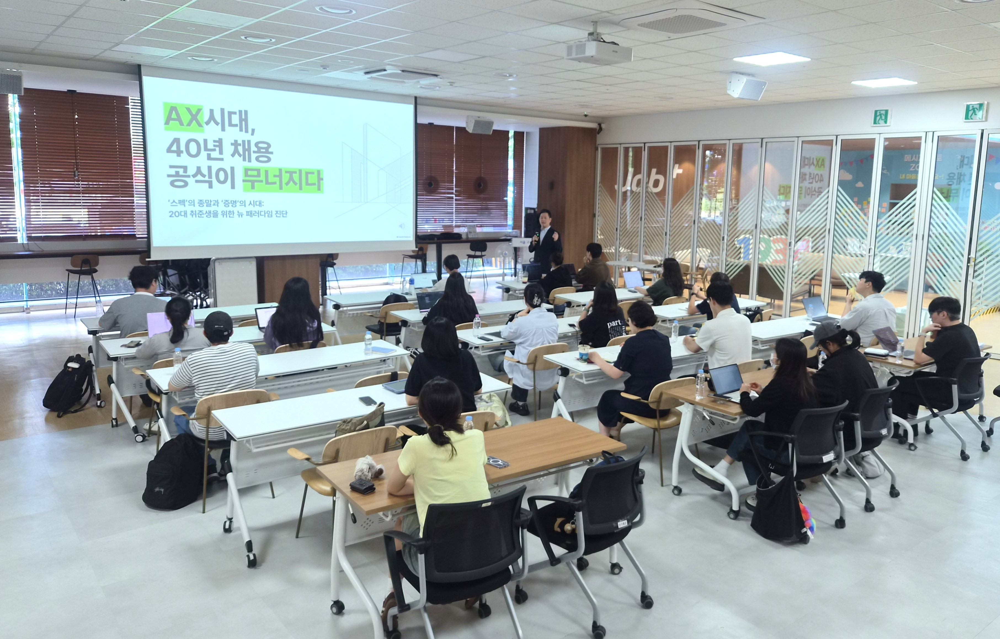
AX시대, 40년 채용 공식이 무너지다
9월 14일 청년ON라운지 다목적홀에 청년 23명이 모였습니다. 직무, 경험, 공백기, AI 활용까지 고민은 저마다 달랐죠. 사람인 HR 전략팀 이상백 팀장은 ‘AX시대 차별화된 취업 트렌드와 성공 전략’ 강의에서 학벌이나 어학 점수보다 직무 역량, 검증 가능한 AI 활용 경험, 숫자로 보여 주는 결과물이 힘을 얻고 있다고 짚었습니다.
팀핏과 AI 리터러시, 공백기를 실무 경험으로 채우는 방법, 역질문으로 면접 주도권을 잡는 요령을 소개했습니다.
“AX 시대, 당신이 증명할 수 있는 ‘무기’는 무엇입니까?”
핵심은 막연히 스펙을 쌓기 전에 자신만의 강점을 점검하고, 이를 실제 성과로 증명할 수 있어야 한다는 것입니다. 참여자들은 그동안의 취업준비 방향을 다시 돌아보고, 서류·면접 준비에 대한 구체적인 실마리를 얻었다는 소감을 남겼습니다.
2탄 (9.18)정답 기업은 없다. 근거 있는 선택만 있을 뿐
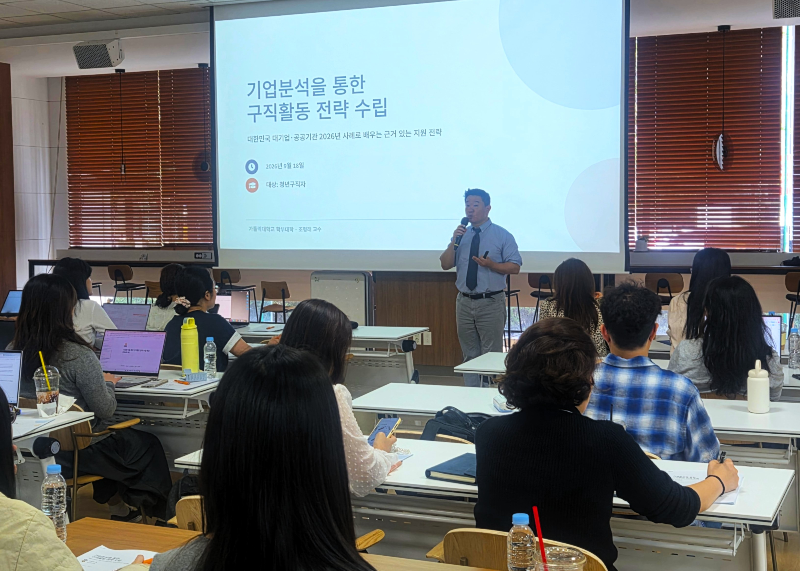
기업분석을 통한 구직활동 전략 수립
9월 18일 강의를 맡은 가톨릭대학교 조형래 교수는 ‘기업 분석을 통한 구직활동 전략 수립’을 주제로, 기업을 선택하는 기준과 전략적인 구직활동 방법을 소개했습니다. 강의에서는 기업 이름값이나 채용 공고에만 의존하는 것이 아니라, DART, ALIO 같은 공식 자료를 활용해 기업을 분석하고, 기업의 실제 직무 내용과 자신의 경험을 연결하는 법을 배웠습니다.
💬 강의를 수강한 청년들의 생생한 목소리
“시장과 전략에 대한 정보가 부족했는데 이제 파악이 됩니다”“지엽적인 시각에서 벗어나 시야를 넓히게 됐어요”“막막함이 풀렸다”
막연하고 두루뭉실한 다짐이 아니라 명확한 계획과 비전을 얻을 수 있는 시간이었습니다.
직설적인 조언이 오갔던 두 번의 시간, 청년들은 기업을 읽는 법과 자신을 점검하는 법을 배웠습니다. 서울고용센터는 이 경험이 좋은 결과로 이어지도록, 청년들의 내일을 응원합니다.
서울고용센터 현장 ZOOM-IN ②| 03
‘알쓸센톡’에서의 배움을 실전으로! - AI를 활용한 기업분석
“왜 우리 회사에 지원했나요?” 이제는 나만의 답을 찾을 시간!
“대체 이 많은 회사 중에 내가 갈 곳은 어디일까?”
“이 회사 진짜 가고 싶은데… 정보가 너무 없다!”
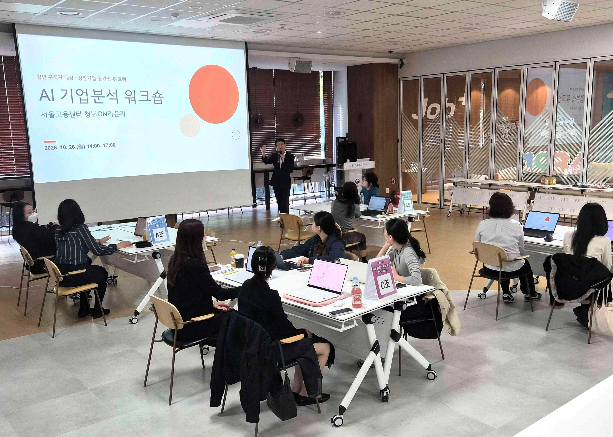
취업 준비를 하다 보면 누구나 한 번쯤 마주하는 고민입니다. 수많은 기업 중 어디에 지원해야 할지, 나의 경험과 역량을 기업이 원하는 인재상과 어떻게 연결해야 할지 막막하기만 합니다.
서울고용센터는 청년들의 이런 고민을 시원하게 해결하기 위해 지난 10월 26일, 서울고용센터 김정규 컨설턴트가 직접 강의를 맡아 지원할 기업을 정확히 이해하고 자신의 경험과 강점을 구체적인 지원동기로 연결하는 ‘AI 기반 기업분석을 통한 구직활동 강화’ 워크숍을 열었습니다.
지피지기면 백전백승! - 기업분석, 감이 아닌 팩트로!
취업 전선에서도 ‘지피지기면 백전백승’이라는 말은 통합니다. 내가 지원할 기업을 제대로 아는 것이야말로 성공적인 구직 활동의 출발점이기 때문입니다. 이번 특강에서는 AI 도구를 활용해 지원할 기업을 정확히 이해하는 방법을 배우는 것으로 시작했습니다.
Gemini, NotebookLM, Perplexity, ChatGPT, Claude 등 다양한 AI로 DART 공시, ALIO 경영공시, 채용 공고와 최신 보도자료를 분석했습니다. 복잡하고 방대한 기업 자료들을 AI로 알아보기 쉽게 정리하는 법을 배우며, 청년들이 원하는 기업에 한층 더 가까이 다가갈 수 있었습니다.
기업을 제대로 이해하면 지원동기도 달라집니다. 막연한 관심이나 일반적인 표현이 아닌, 기업의 특성과 직무에 대한 이해를 바탕으로 자신만의 지원 이유를 구체화할 수 있기 때문입니다. 이번 워크숍은 AI를 단순한 정보 검색 도구가 아닌, 기업을 이해하고 자신의 경험과 역량을 연결하는 취업전략도구로 활용했다는 점에서 의미가 있었습니다.
참여자 한줄 소감
“AI를 활용해 취업하고 싶은 기업을 정확히 분석한 후 그에 맞춰서 지원동기를 써보니 자기소개서가 훨씬 깔끔하고 명확해졌습니다. 유익한 시간이었습니다!”
🎙️ 강사님이 전하는 한마디서울고용센터 김정규 컨설턴트
“기업이 어떤 사업에 집중하고 있는지, 자신이 지원하는 직무가 그 안에서 어떤 역할을 하는지 이해해야 진짜 지원동기를 쓸 수 있습니다. AI를 단순히 글을 대신 써주는 도구로만 이용하지 말고, 방대한 자료 속에서 필요한 정보를 찾아주는 훌륭한 리서치 파트너로 활용하세요. 객관적인 기업 정보와 자신만의 경험을 연결한다면, 설득력 있는 지원 동기와 실행 계획을 만들어 갈 수 있습니다.”
서울고용센터 현장 ZOOM-IN ③| 04
청년의 자기이해를 위한 「나를 알고 길을 찾다」
“내가 정말 하고 싶은 일이 무엇인지, 내 성향에 맞는 직무는 도대체 무엇일까..?”
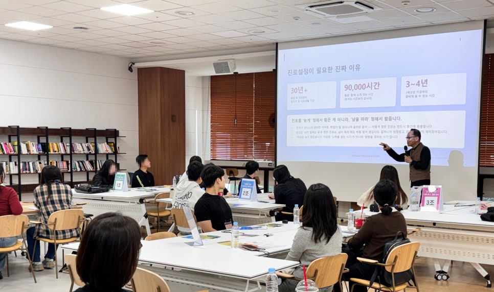
취업 전선에 뛰어든 청년들이 가장 풀기 어려운 숙제는 바로 ‘자기 이해’입니다. 막막한 구직난 속에서 방향을 잃기 쉬운 청년들을 위해 서울고용센터가 상명대 일자리 첫걸음 보장센터와 손을 잡고 특별한 프로그램을 마련했는데요, 바로 청년들의 자기이해를 돕고 구체적인 진로 방향을 제시하는 ‘E-DISC 행동유형 진단 프로그램, <나를 알고 길을 찾다>’입니다.
지난 10월 8일 진행된 이 프로그램에서는 스펙 쌓기에만 몰두하느라 정작 자신의 진짜 강점과 성향을 몰랐던 청년들은 객관적 진단으로 스스로를 정확히 알고, 그에 맞는 최적의 진로 방향을 설정할 수 있었습니다.
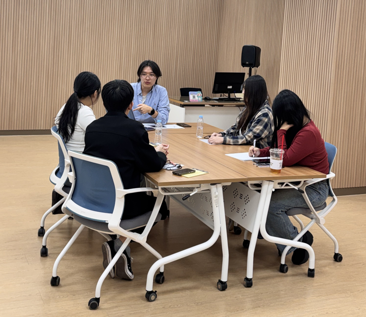
🔍 E-DISC 진단이란?
행동 성향을 주도형(D), 사교형(I), 안정형(S), 신중형(C) 네 가지 유형으로 분석해, 업무 환경에서 선호하는 소통 방식과 나만의 강점을 알려 주는 대표적인 자기이해 도구입니다. 설문 형태라 빠르고 직관적으로 진행되어, 짧은 시간에 내 성향을 객관적으로 볼 수 있다는 점이 장점입니다.
D 주도형 (Dominance) · 목표 지향적이고 추진력이 뛰어나며, 빠른 의사결정과 도전적인 과제를 통해 성과를 내는 데 강점이 있습니다.
🧭 잠시 멈춰 나를 들여다보는 시간
이날 청년들은 E-DISC 설문으로 각자의 행동 유형을 확인하고, 그룹 상담에서 서로의 성향 차이를 이해하는 시간을 가졌습니다. 결과지를 받는 데서 끝나지 않고, 희망하는 경우 1:1 심층 상담으로 이어져, 구체적인 진로 고민의 실마리를 그 자리에서 풀 수 있었습니다.
💬 참여 청년들이 전하는 생생한 후기
“직무 선택에 대한 고민이 많았는데, 내 성향을 알게 돼 큰 도움이 되었습니다.”
“진로를 정하지 못해 막막했는데, 짧은 시간에 설문으로 자기이해를 높일 수 있어 무척 효율적이었어요.”
“검사 이후 1:1 심층 상담도 바로 이어져서 더 든든하고 실질적인 도움이 되었습니다.”
“혼자 고민할 때는 보이지 않던 제 성향의 장단점을 객관적으로 마주하니, 어떤 직무에 집중해야 할지 방향이 조금씩 잡히는 기분입니다. 이런 프로그램이 더 자주 열렸으면 좋겠습니다!”
취재 및 기사 작성
청년ON기자단 3기 최진·김유석
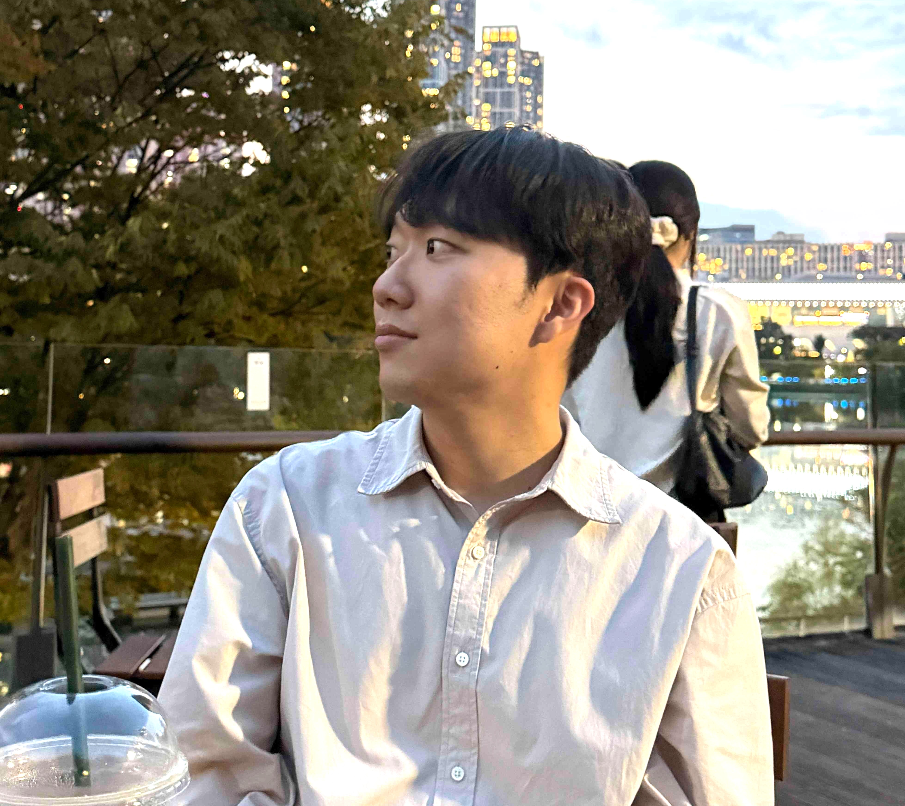
서울고용센터 WHAT'S NEW? ①| 05
자기탐색부터 면접까지, 취업 준비 한 번에 ON!
“지원할 기업은 정했다! 그런데 자소서는 어떻게 쓰고, 면접은 어떻게 준비하지?”
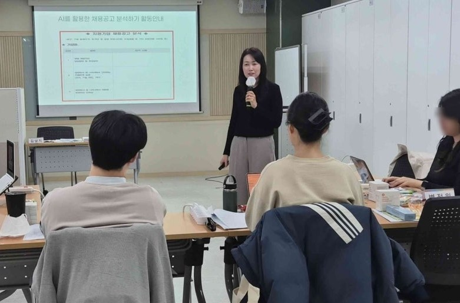
가고 싶은 기업과 직무를 정했다고 취업 준비가 끝난 건 아니죠. 기업 분석부터 직무에 맞춘 자소서 작성, 면접까지… 막상 시작하려니 어디서부터 시작해야 할지 막막한 청년들을 위해 서울고용센터가 취업 준비의 모든 단계를 연결하는 올인원 프로그램 ‘청년취업ON’을 지난 9월부터 새롭게 선보였습니다.
10월에도 취업준비생을 대상으로 이틀간(10.26.~10.28.) 총 15시간의 집체 교육을 진행했는데요, 자기탐색을 통한 이해부터 기업·직무 분석, 구직서류 작성, 모의면접까지 취업 준비의 전 과정을 단계별로 경험하도록 설계한 것이 핵심입니다.
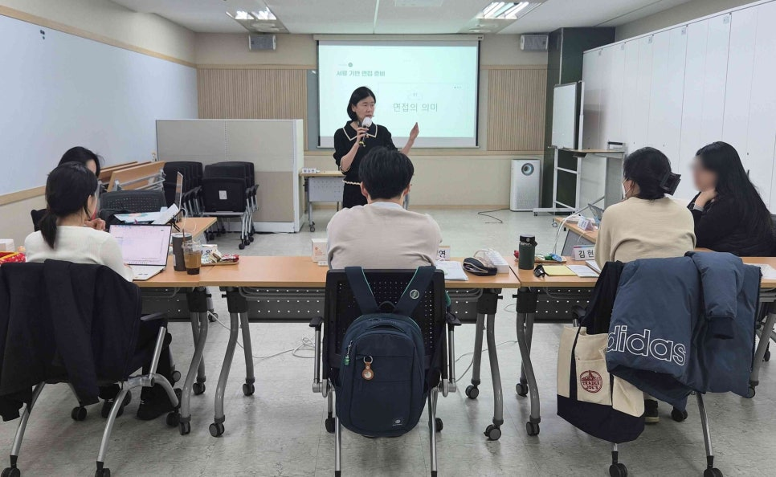
STEP 01 · 자기탐색 & 기업분석
나를 알고, 기업을 알아야 지원 전략이 보인다!
청년취업ON은 스스로를 아는 것에서 출발합니다. 참여자들은 자신의 경험과 경력을 살펴보고, 생성형 AI를 활용해 강점을 확장하며 나만의 ‘스토리 뱅크’를 구축하고, 면접관의 평가 관점과 채용 절차도 함께 살펴보며 취업 준비의 기초를 다졌습니다.
이후 가고 싶은 기업과 직무를 AI로 분석하며, 막연히 ‘이 회사에 가고 싶다’는 생각에서 한 걸음 더 나아가, 기업이 원하는 역량과 나의 경험이 어떻게 연결되는지 구체적으로 찾아가는 법을 배웠습니다.
STEP 02 · 자소서 & 밀착 피드백
자소서 쓰고, 피드백 받고, 다시 완성하고!
기업과 직무에 대한 이해를 마쳤다면 이제는 실전! 객관적 분석을 바탕으로 자기소개서를 작성하고, 완성한 구직서류는 밀착 컨설팅을 통해 부족한 부분을 보완했습니다. 한 번 써보고 끝나는 것이 아니라, 쓰고, 점검하고, 다듬으며 완성도를 높이는 과정! 혼자서는 놓치기 쉬운 부분도 피드백을 주고받으며 하나씩 채워갈 수 있었습니다.
STEP 03 · 모의면접 & 포트폴리오
서류 준비에서 실전 면접까지, 끊김 없이 ON!
서류를 완성했다면 다음 관문은 면접입니다. 1분 자기소개를 준비하고, AI로 예상 질문과 답변을 구성하며 실전에 대비했는데요, 이어진 모의면접에서 참여자들은 직접 답변하고 상호 피드백을 주고받으며 개선점을 찾았습니다. 이어서 채용공고를 바탕으로 한 포트폴리오 작성까지 해보며, 배운 내용을 실제 구직 활동으로 연결하는 연습도 이어졌습니다.
앞으로의 취업계획을 세우며 강의는 마무리 됐는데요, 배우는 데서 끝나는 것이 아니라, 직접 해보고 다음 행동까지 준비하는 것! 청년취업ON이 지향하는 실전형 취업 준비 과정이었습니다.
“혼자서는 놓쳤던 빈틈, 함께하니 보였어요!”
참여자들은 이번 프로그램을 통해 취업 준비 상태를 객관적으로 점검하고, 혼자서는 발견하기 어려웠던 부족한 점을 확인할 수 있었다고 전했습니다.
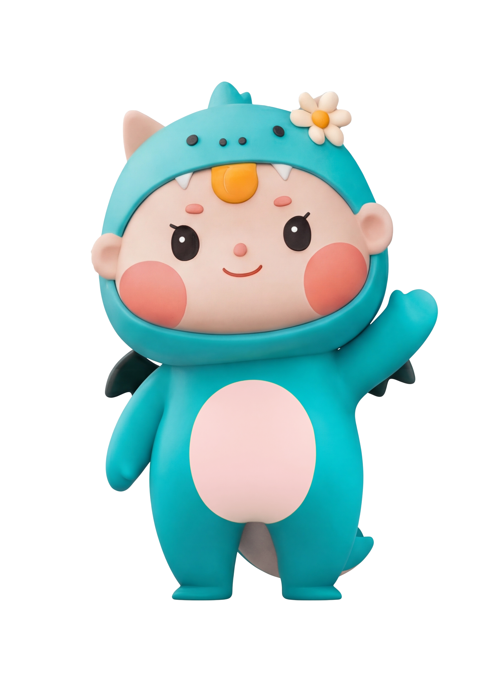
취업 준비의 시작부터 실전까지, 서울고용센터와 함께!
취업 준비의 막막함은 덜고, 가능성은 더하고! 서울고용센터는 앞으로도 다채로운 취업 지원 프로그램을 통해 청년들의 도전과 성장을 응원하겠습니다.
서울고용센터 WHAT'S NEW? ②| 06
해외 경험이 창업 아이템이 된다면? 「리턴인재를 위한 AI NEXT(창업가) 스쿨」
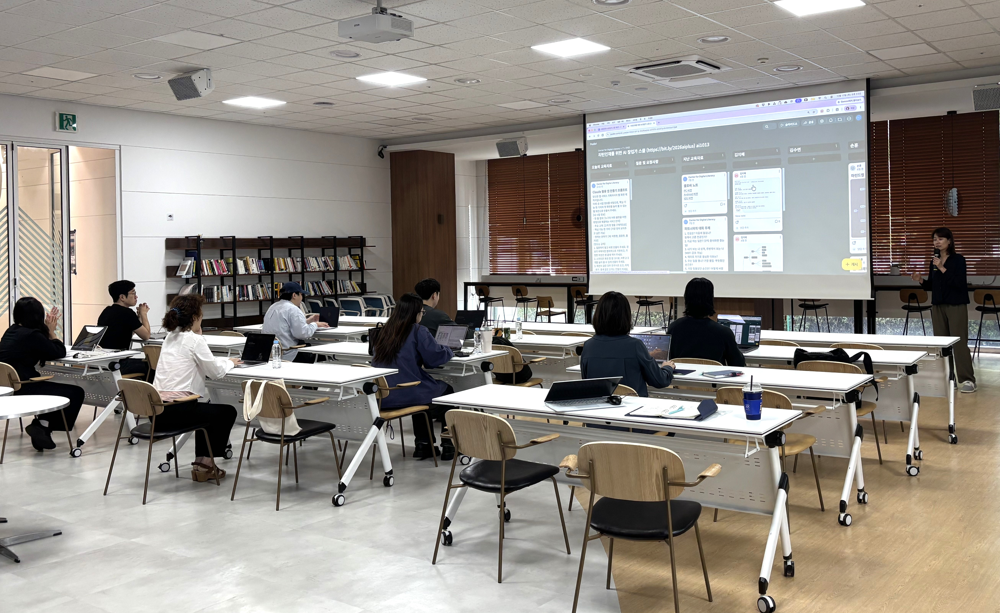
해외에서 얻은 경험은 아무나 갖지 못한 자산인데, 한국으로 돌아오면 이 경험이 국내의 직무·자격 기준과 맞지 않아 빛을 잃을 때도 많죠. 그렇다면 그 경험을 ‘내 사업’의 출발점으로 삼아 보면 어떨까요?
서울고용센터는 한국산업인력공단과 디지털리터러시협회와 협업하여 해외에서 복귀한 청년들을 위해 10월 매주 화요일, 총 4주간 「리턴인재를 위한 AI NEXT(창업가) 스쿨」을 새롭게 열었습니다. 그 현장의 이야기를 지금부터 들려드립니다.
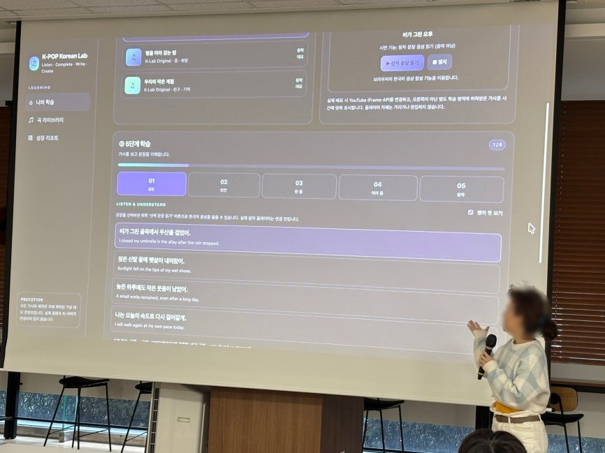
10.6. [1주차] - 10.13. [2주차]
경험이 곧 아이템!
첫 시간(10.6.)의 멘토는 일본 도쿄에서 IT 기업 WEAVUS를 공동 창업한 김정화 대표였습니다. 김 대표는 강의에서 “해외 경험은 단순한 스펙이 아니라, 두 시장의 격차를 보는 눈”이라고 말하며, 본인의 창업 경험을 들려줬는데요, 어디서도 듣지 못할 생생한 경험담에 청년들은 주의를 집중했습니다.
이어 디지털리터러시협회 김묘은 대표는 강의에서 AI 시대의 일자리를 살펴보고 AI 활용 역량도 진단했습니다. 서로의 해외 경험을 나눈 뒤에는 AI를 활용해 현지 시장 경험, 언어, 문화 감각, 적응력, 도전정신을 주제로 마인드맵과 인포그래픽을 만들며, 해외에서 얻은 경험으로 창업 아이템을 만들어 가는 과정을 시작했습니다.
2주차(10.13.) 참여자들은 “이거 한국엔 없는데?” 싶었던 것들을 창업 아이템으로 제안했습니다. 생활 속 아이디어를 상품과 서비스로 기획하고, AI로 웹앱도 만들어 보며 사업계획서를 작성하는 시간을 가지며, 창업의 토대를 세웠습니다.
10.20. [3주차] - 10.27. [4주차]
아이디어를 앱으로, 그리고 발표까지
3주차(10.20.)에는 내 아이템을 앱으로 만드는 실습이 이어졌습니다. AI와 함께 앱스 스크립트를 작성하고, 앱 개발 프롬프트를 배우며 서로 피드백을 나눴습니다. 마지막 4주차(10.27.)는 발표시간!
한 청년은 테니스와 스쿼시를 결합한 인기 스포츠 ‘파델’의 경기 찾기부터 만들기, 등록 신청까지 한곳에서 해결하는 웹앱을, 다른 청년은 번역으로 한국어를 익히는 언어 학습 앱을 선보였습니다. 아이템 발굴부터 앱 제작, 발표까지 4주의 시간을 거치며, 청년들은 창업의 꿈에 가까이 다가갈 수 있었습니다.
★ 강의 만족도 2·3주차 모두 100%!
발표를 마친 한 청년은 머릿속 생각이 구체적인 결과를 얻는 자신감을 얻었다고 밝혔고, 다른 청년은 창업을 구체적으로 그려 보게 됐다며 내년 상반기 경진대회에 참가할 예정이라 답했습니다.
취업이냐 창업이냐, 꼭 하나만 고를 필요는 없습니다. 프리랜서, 1인기업, N잡까지 일의 형태를 넓혀 보고, 자신만의 경험으로 아이템을 찾아 결과물까지 만들어 본 4주 동안 청년들이 한층 더 성장했길 바랍니다. 서울고용센터가 국내에 복귀한 청년들의 새로운 내일을 응원합니다.
서울고용센터 SPECIAL| 07
청년ON기자단 3기 출격 청년의 눈높이로, 서울고용센터의 진짜 이야기를 전할 시간
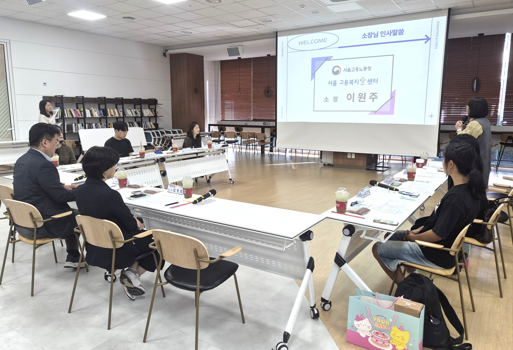
청년의 시각에서 서울고용센터의 다채로운 이야기를 가장 가깝고 친근하게 전해줄 새로운 이야기꾼들, ‘청년ON기자단 3기’가 설레는 첫출발을 알렸습니다.
지난 9.18. 청년ON라운지에서 개최된 기자단 위촉식은 센터 소개와 격한 환영으로 포문을 열었습니다. 현장에 모인 기자단을 향한 아낌없는 지지를 보내주신 이원주 前센터장님의 격려 말씀부터 앞으로의 여정을 기대하게 만든 재치 있는 미션 영상 시청, 반짝이는 눈빛으로 나눈 자유롭고 활기찬 향후 활동 논의 시간까지— 행사 장소는 기자단 이들의 설렘과 열정 에너지로 온통 가득 채워졌습니다.
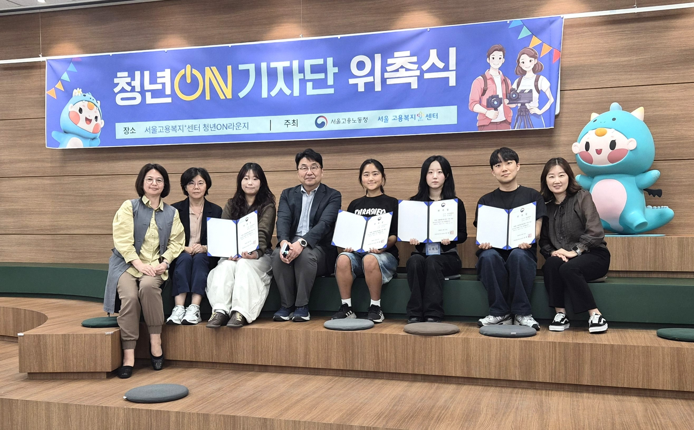
저마다의 개성과 반짝이는 아이디어를 품은 여섯 명의 청년 기자단이 서울고용센터의 생생한 소식을 어떻게 풀어나갈지 많은 기대와 관심 부탁드립니다. 그 시작점에 선 이들이 직접 전하는 당찬 각오를 전해드립니다.
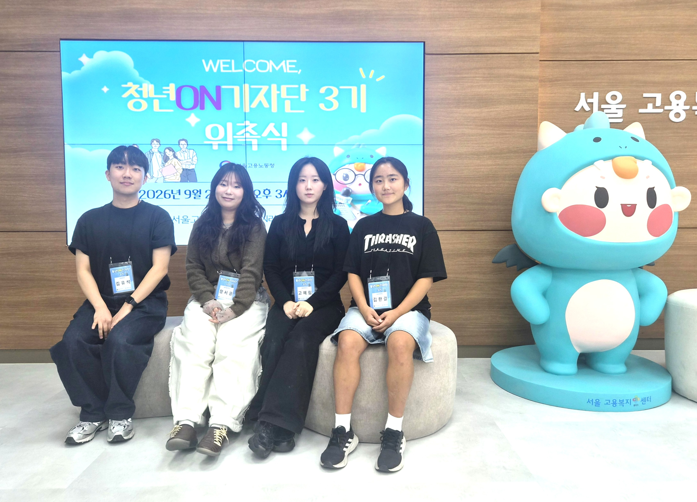
고예림 기자
“청년들의 목소리를 가장 가까이서 듣고, 꼭 필요한 정책 정보를 발로 뛰며 전하겠습니다!”
김유석 기자
“기자단 리더로서 센터와 프로그램에 대한 홍보가 효과적으로 이뤄지도록 열심히 노력하겠습니다!”
김하정 기자
“서울고용센터와 청년들을 잇는 가장 든든하고 유쾌한 소통의 가교가 되겠습니다!”
김한결 기자
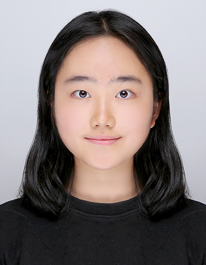
“청년 정책 및 취업 관련 행사를 직접 경험하고 전하는 역할을 맡아 기쁩니다. 생생한 후기와 다양한 정보를 알리고자 노력하겠습니다.”
장서윤 기자
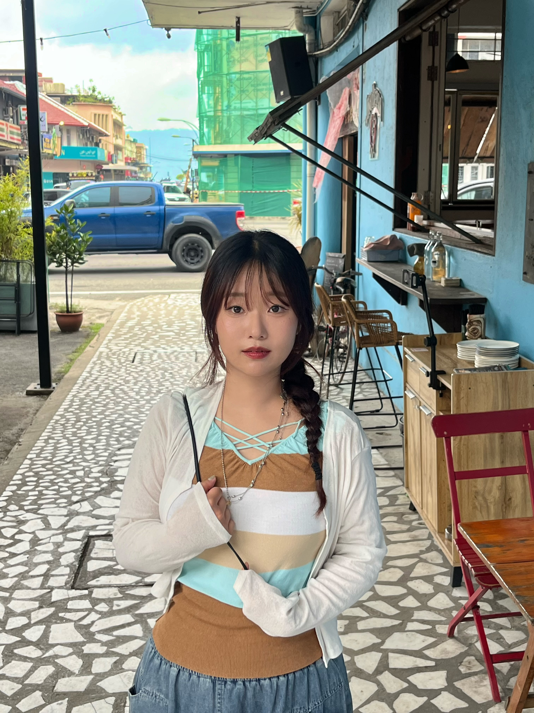
“청년ON기자단 3기의 기자를 맡게 되어 굉장히 설레고 열심히 해보고 싶은 마음이 들었습니다. 앞으로 많이 지켜봐주시고 응원해주세요!”
최진 기자
“빛나는 청년들의 내일을 응원하는 마음으로, 언제나 진심을 담아 현장을 기록하겠습니다!”
서울고용센터 기자단 리포트 ①| 08
대한상의와 함께한 취업 포트폴리오 챌린지! AI 직무 탐색 & 업무 자동화 편 현장 속으로!
“AI한테 ‘자소서 써줘’만 시키던 내가, 실무 자동화 시스템까지 만들어버렸다?”
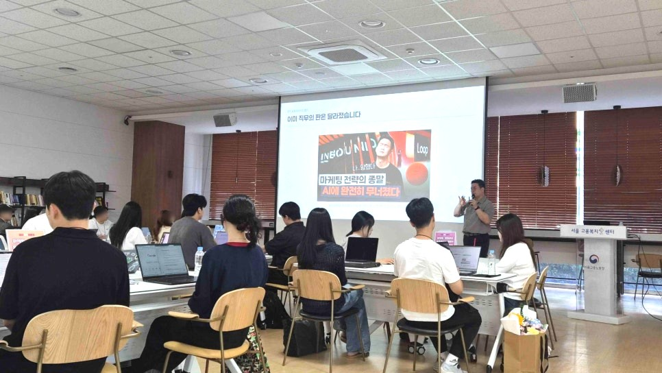
요즘 취업을 준비하면서 AI를 활용하는 경우가 많아졌는데요. 그렇다면 AI를 자기소개서나 자료 검색에 사용하는 것에서 더 나아가, 실제 직무와 업무를 경험하는 데에도 활용할 수 있을까요? 9월 28일 마케팅 직무를 희망하는 문과생 청년들이 직무 역량을 다양하게 확장할 수 있도록 기획한 ‘취업 포트폴리오 챌린지’ 현장을 청년ON기자단이 직접 다녀왔습니다.
⚡ AI로 실무를 경험하다
이번 프로그램은 ‘AI가 도래한 세상’이라는 주제로 시작했습니다. 단순히 AI의 기능을 배우는 교육이 아니라, AI 직무진단 에이전트*를 활용해 <직무 탐색 → 업무 문제 정리 → 해결 방법 제작 → 결과물 공유> 순서로 진행됐습니다. 참가자 전원이 직무 진단부터 PRD 작성, Google AI Studio 실습 등으로 현장의 이슈를 구조화하고, 이를 해결하는 법을 배웠습니다.
*AI 직무진단 에이전트란? 문제 정의부터 해결, 보고서 작성까지 해주는 업무 자동화 AI
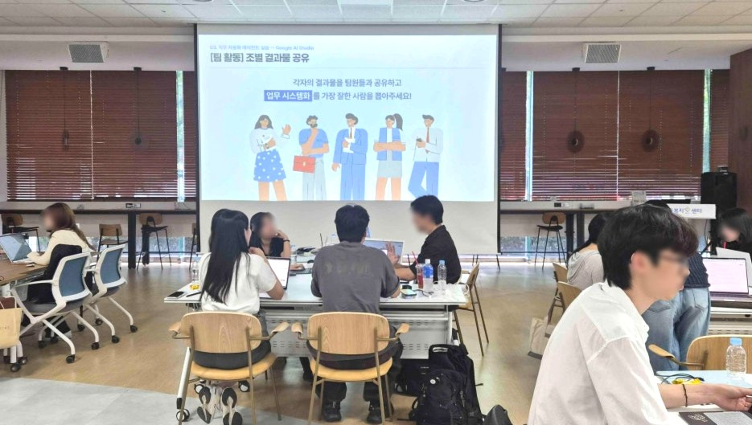
🧩 핵심 과정: 문제 정의에서 업무 자동화 구현까지
“AI에게 무엇을 시킬지 정하는 것보다 내가 어떤 문제를 해결하고 싶은지 먼저 명확하게 정리하는 것이 중요해요.”
소통전략연구소 이상욱 대표는 이렇게 강조했습니다. 취업을 준비하다 보면 관심 직무가 정확히 무슨 일을 하는지 모를 때가 많은데, 참가자들은 AI 직무 진단 에이전트를 통해 필요한 업무와 역량을 알아갔습니다.
이어서 업무 중 발생하는 비효율적인 문제를 회의록으로 정리하고, PRD*도 작성했습니다. “내가 작성한 프롬프트로 이게 진짜 만들어지네?”라는 감탄이 라운지 곳곳에서 나왔습니다. 같은 도구를 쓰더라도 문제를 어떻게 정의하느냐에 따라 결과물이 전혀 달라진다는 점이 인상적이었습니다.
*Product Requirements Document(제품 요구사항 문서)란? 제품 기획 단계에서 목적과 기능 등을 정리한 문서
💡 현직자 Q&A: 도구보다 중요한 ‘내가 풀고 싶은 문제’
도구를 많이 써본 것이 답은 아니다!
단순히 AI 도구를 많이 써봤다는 사실보다, 어떤 문제를 해결하려고 했고 이를 지원 직무의 관점에서 어떻게 해석했는지가 중요합니다. 기능의 화려함이 아니라, 스스로 문제를 정의하고 도전하고 배운 과정을 자신만의 이야기로 보여주는 힘이 필요합니다.
업무를 아는 것이 먼저!
AI를 잘 활용하는 것도 결국 업무를 제대로 이해하는 것에서 시작됩니다. 내가 해결하고 싶은 문제가 무엇인지 명확히 정리할 수 있다면, AI를 활용해 자신만의 차별화된 실무 포트폴리오를 만들어낼 수 있습니다.
이 대표는 “AI에게 답을 얻는 것에서 그치지 않고, 내가 해결하고 싶은 문제를 먼저 생각하는 시각을 갖춘다면 좋은 결실이 있을 것”이라며 청년들을 격려했습니다.
서울고용복지+센터에서는 청년들을 위한 다양한 특강과 취업 프로그램이 상시 운영되고 있습니다! 생생한 취업 정보로 가득한 공식 인스타그램(@moel_seoulew)을 지금 바로 확인해 보세요!
취재 및 기사 작성
청년ON기자단 3기 최진·김유석
서울고용센터 기자단 리포트 ②| 09
AI와 직무를 연결하는 사람들 : 취업 포트폴리오 챌린지 강사&참여자 인터뷰
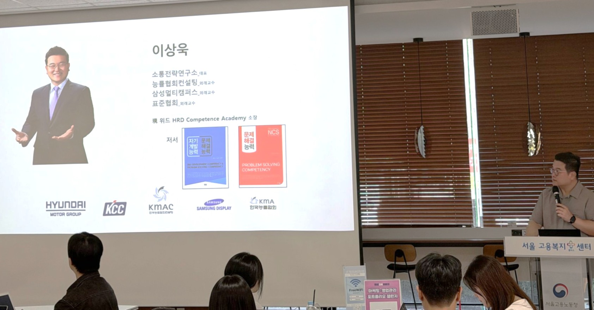
INTERVIEW 01 · 강사 인터뷰
소통전략연구소 대표 이상욱
“AI를 내 상황과 직무에 맞게 커스터마이징하는 것이 핵심입니다”
Q. 간단한 자기소개 부탁드려요.
안녕하세요, 소통전략연구소 대표 이상욱입니다. 이번 ‘취업 포트폴리오 챌린지’에서 AI를 활용한 직무 탐색부터 업무 자동화 실습까지 과정 전반을 맡아 진행했습니다.
Q. 이번 프로그램을 기획하면서 가장 중요하게 생각한 부분은 무엇인가요?
전문적인 내용이 많아 ‘교육생들이 잘 따라올 수 있을까’ 하는 고민이 가장 컸습니다. 그런데 막상 진행해보니 스스로 결과물을 만들어내고 마지막에 직접 발표까지 해내는 모습이 참 인상적이었습니다.
Q. 이번 프로그램에서 AI 직무진단 에이전트를 활용한 이유가 궁금합니다. 일반적인 직무검사와 어떤 차이가 있나요?
일반적인 직무검사는 비교적 스탠다드한 방식으로 진행되는 반면, 이번에 활용한 AI 직무진단 에이전트는 개인에 맞게 커스터마이징할 수 있다는 점에서 선택했습니다. 진단 콘텐츠를 면밀히 검토했을 때도 충분히 신뢰할 수 있는 수준이라고 판단했습니다. 교육생들이 단순 직무명 파악을 넘어 실제 취업 준비 과정에서 직무를 구체적으로 이해하고 연결할 수 있도록 돕고자 했습니다.
Q. 이번 프로그램을 통해 교육생들이 무엇을 얻어갔으면 하시나요?
참여자들이 노션, 제미나이, Google AI Studio 등 여러 프로그램을 오가며 작업하는 과정을 다소 어려워했는데요, 이번 프로그램을 통해 AI를 정해진 틀대로 쓰기보다, 본인의 상황과 목표 직무에 맞게 자유롭게 커스터마이징해 활용하는 역량을 키울 수 있었으면 좋겠습니다.
참여자 TALK TALK
오은지 20대, 여 · 엔터테인먼트 분야 취업준비생
Q. 이번 프로그램에 참여하게 된 계기는 무엇인가요?
취업을 준비하면서 포트폴리오가 필수적이라는 걸 느꼈어요. 기존 사무툴을 활용하는 것뿐만 아니라 AI를 활용해서 나만의 포트폴리오도 만들어보고 싶어서 참여하게 됐습니다.
Q. AI 직무진단 결과를 처음 봤을 때와 직접 과제를 해봤을 때는 어땠나요?
직무 관련 용어를 자세히 알려줘서 실제 어떤 일을 하는지 정확히 이해하는 데 도움이 됐어요. 자연어로 입력하면 내용을 빠르게 시각화해 줘서 AI가 일을 신속하게 도와준다는 신뢰도 생겼습니다.
Q. 이번 프로그램을 통해 가장 얻어간 것이 있다면 무엇인가요?
직무를 간접적으로 경험해볼 수 있었다는 점이 가장 인상적이었고, 취업을 준비할 때도 이번에 경험한 내용을 활용해 어필할 수 있을 것 같다는 생각이 들었습니다. 앞으로도 이런 종류의 프로그램이 더 많이 생겼으면 좋겠어요!
취재 및 기사 작성
청년ON기자단 3기 최진·김유석
서울고용센터 기자단 리포트 ③| 10
면접관 시선에서 청년과 소통공감 TALK 현장 LIVE 스펙을 넘어 나만의 경쟁력으로, 면접관이 청년에게 전한 취업의 기술
취업 준비에서 가장 중요하지만 청년들이 가장 어려워하는 취업 과정의 마지막 관문, 바로 면접입니다. 서울고용센터는 “면접, 확실한 팁을 줄 수 없을까?”라는 고민에서 출발해 청년들과 현직 면접관들이 직접 만나 솔직한 이야기를 나누는 「소통공감토크」를 기획했습니다.
지난 10월 28일 열린 이 자리에서는 네 명의 현직 면접관들이 실제 면접관의 시선으로 살펴본 채용 기준과 취업에 관한 현실적인 조언을 건넸습니다. 그 현장의 이야기를 청년ON기자단이 생생히 전해드립니다.
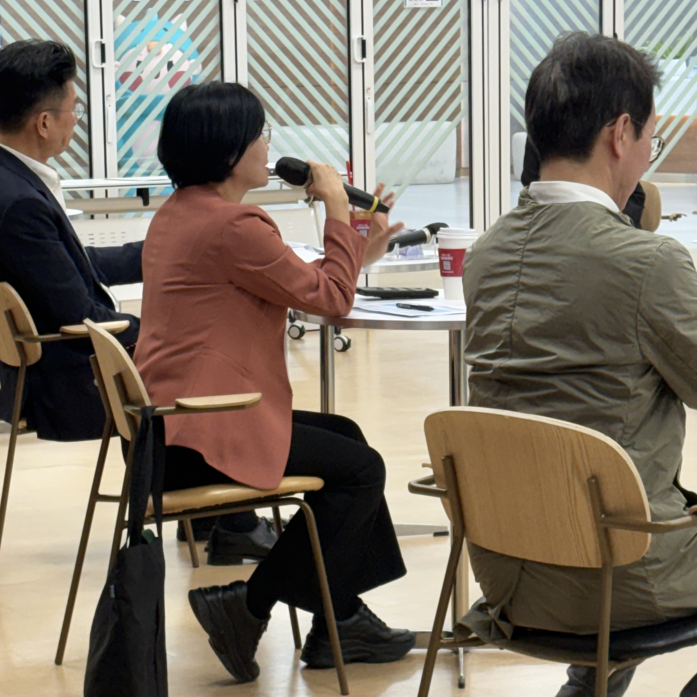
🎫 스펙은 허들을 넘기 위한 티켓, 중요한 것은 직무와의 연결
취업을 준비하는 청년들이 가장 먼저 고민하는 것 중 하나는 스펙일 것입니다. 자격증이나 어학 성적, 인턴 경험 등 무엇을 얼마나 갖춰야 할지 고민하지만, 면접관들은 무작정 쌓는 스펙보다 지원하는 기업과 직무에 그 스펙이 얼마나 적합한지가 더 중요하다고 강조했습니다.
따라서 목표로 하는 기업과 직무를 구체적으로 설정하고, 자신이 가진 경험과 역량을 직무와 연결해 면접관에게 설득력 있게 전달하는 것이 중요하다고 조언했습니다.
💬 현직자 Q&A: 자신만의 경험과 직무의 연결고리를 찾는 것이 중요!
Q. 대기업 인턴만이 좋은 경험일까?
“취업에서 중요한 것은 어디에서 일했느냐보다 그곳에서 무엇을 배우고, 어떤 역량을 키웠느냐가 중요합니다. 대기업 인턴만을 기다리다 보면 취업준비기간이 길어지고, 오히려 다음 기회를 잡기가 어려워질 수 있습니다. 면접관들은 작은 기업에서의 경험이든, 직무관련 프로젝트든, 현장실습이든 모든 경험에는 배울점이 있기 때문에, 일단 원하는 직무가 있으면 도전해서 그 안에서 경험치를 쌓고 실력을 한 단계씩 키워 나가라고 강조했습니다.”
Q. AI 시대의 채용, 어떻게 대비해야 하나요?
어떤 직무에 지원하든, AI는 이제 빠질 수 없는 화두입니다. 하지만 AI라는 도구를 많이 써봤다는 사실보다 더 중요한 것은 지원 직무에 대한 전문적인 지식과 이해가 선행되어야 한다는 것입니다. 그래야 AI도 ‘가치있게’ 활용할 수 있을 테니까요.
Q. 좋아하는 일과 잘하는 일 사이, 나에게 맞는 커리어 찾기
취업을 준비하는 과정에서 가장 중요한 것은 자신이 무엇을 좋아하고 잘하는지 파악하는 것입니다. 만약 혼자서 준비하는 것이 막막하다면, 고용센터 등 취업지원 전문가에게 도움의 손길을 요청해 보세요. 객관적 진단과 상담으로 진로를 구체화할 수 있을 것입니다.
이번 간담회는 청년들이 채용 현장의 목소리를 현직 면접관들에게 듣고 자신의 취업 준비 과정을 돌아보는 자리였는데요, 자신의 경험을 깊이 있게 들여다보고, 지원하는 직무와 연결해 나가는 것. 결국 자신만의 경쟁력을 스스로 발견하고 구체화하는 것이 중요하다는 것을 생생히 느낄 수 있었습니다.
취재 및 기사 작성
청년ON기자단 3기 김한결·고예림·김유석
서울고용센터 기자단 생생 체험기| 11
현장브리핑: 모의면접DAY 체험기 현직 면접관의 직설 피드백, 내 답변의 민낯을 마주하다
현재 4학년, 열심히 취준중
청년ON기자단 3기 김유석
유통·물류 직무를 목표로 취업을 준비 중인 청년ON기자단 김유석 기자가 10월 30일 서울고용복지+센터 모의면접데이에 지원자로 참여했습니다. 실제 면접과 같은 절차를 거치고, 끝난 뒤 답변 하나하나에 대한 피드백을 받았습니다.
1. 지금 신입은 ‘중고신입’과 같은 자리를 두고 겨룬다
현직자가 전한 채용 시장 이야기가 먼저 마음에 걸렸습니다. 최근 합격자의 절반 이상이 다른 회사를 다녀 본 ‘중고신입’이고, 평균 연령도 30대 초반이라고 합니다. 실무 경험을 갖춘 지원자들과 같은 자리를 두고 겨루는 셈입니다. 공채가 줄고 수시채용으로 옮겨 가는 데다, 자동화로 채용 규모도 줄고 있다는 설명이 뒤따랐습니다.
2. “답변이 2분을 넘었습니다” - 가장 많이 나온 지적
이날 참여자 모두가 공통으로 들은 말은 “길다”였습니다. 답변이 2분을 넘고, 요점을 듣는 사람이 일일이 찾아내야 했다는 것입니다. 처방은 분명했습니다. 두괄식으로 결론을 먼저 말하고, 보완 설명을 뒤에 붙일 것. 한 답변은 서너 문장으로 끝낼 것.
A를 물었는데 B와 C까지 흘러가는 것도 흔한 실수입니다. 저 역시 “대답이 산으로 간다”는 지적을 받았습니다. 묻는 것 하나에만 답하고, 마지막에 핵심을 한번 더 강조하라는 조언이었습니다.
지원동기도 마찬가지입니다. 내가 왜 하고 싶은지보다 회사 관점에서 내 역량으로 무엇에 기여할지를 말해야 합니다. 경험도 늘어놓기보다 답변마다 하나씩, 실제로 한 일과 지원 직무에 어떻게 적용할지를 이어 말하라고 했습니다.
3. 말투와 태도에 사람이 드러난다
내용만큼 자주 지적된 것이 말투였습니다. “아쉽다”, “잘못했다” 같은 부정적 표현은 상황을 어둡게 들리게 하니, 좋은 방향으로 바꿔 보겠다는 의지로 말하라는 조언이었습니다. “유일하다”처럼 단정 짓거나 “누가 그러던데”처럼 전해 들은 말에 기대는 표현도 조심하라고 당부했습니다.
솔직함은 미덕이지만 약점까지 솔직할 필요는 없다는 말도 기억에 남습니다. 비언어적 태도도 지적됐습니다. 목소리 크기, 불안정한 시선, “어…” 같은 군말이 전달력을 깎고, 끄덕임도 면접 전체에서 한 번이면 충분하다고 했습니다.
갈등 상황을 묻는 질문의 취지도 알게 됐습니다. 회사에서 매일 일어나는 일이라 묻는 것이고, 어떤 조직에서든 좋은 방향으로 풀어낸 경험이면 된다고 합니다. 다만 중고신입과 비교해 위축될 필요는 없다고 합니다. 패기와 열정, 자신감을 제대로 표현하는 것만으로도 다른 인상을 남길 수 있다는 조언이었습니다.
INTERVIEW & CLOSING
🎙️ 기자단 한마디
“제 답변의 민낯을 이렇게까지 정확히 들어 본 적은 없었습니다. 편하지는 않았지만 무엇을 고쳐야 할지가 분명해졌습니다. 혼자 준비하면 내 답변이 어떻게 들리는지 알 길이 없습니다. 면접을 앞두고 있다면 꼭 참여해 보세요!”
💬 함께한 지원자의 한마디
“면접을 보고 나면 항상 무엇이 문제였는지 몰랐는데, 솔직한 피드백이 제공되어 좋았습니다!”
취재 및 기사 작성
청년ON기자단 3기 김유석
서울고용센터 UPCOMING EVENTS & QUIZ| 12
놓치면 아쉬운, 알찬 프로그램들이 연말에도 여러분을 기다리고 있습니다.
11/27
모의면접데이
현직자 면접관과 함께하는 모의면접 프로그램
12/9
취업준비콘서트 · 유한양행 편
현직자에게 듣는 생생한 직무&채용 토크
12/9
프레디저 진로설계 커리어 스타트업
“좋아하는 것을 할까 잘하는 것을 할까?” 고민하는 사람들을 위한 진로설계 프로그램!
※ 자세한 내용은 서울고용센터 인스타그램(@moel_seoulew)에서 확인해 주세요!
🎁 EVENT · 도전! 퀴즈 ON힌트: GO 🐉
고용노동부의 대표 마스코트인 이 캐릭터의 이름은 무엇일까요?
11월호 웹진, 열심히 읽으셨죠? 그렇다면 이 퀴즈, 어렵지 않을 거예요. 웹진 곳곳에서 귀여운 자태를 뽐내며 활력을 더해준 이 캐릭터! 다들 많이 보셔서 익숙하시죠?
📌 참여 방법
서울고용센터 인스타그램(@moel_seoulew)을 팔로우하고, 이벤트 게시물에 정답을 댓글로 남겨주세요. 추첨을 통해 50명에게 커피 쿠폰을 선물로 드립니다!
청년ON소식을 가장 빠르게 · [인스타그램] @moel_seoulew
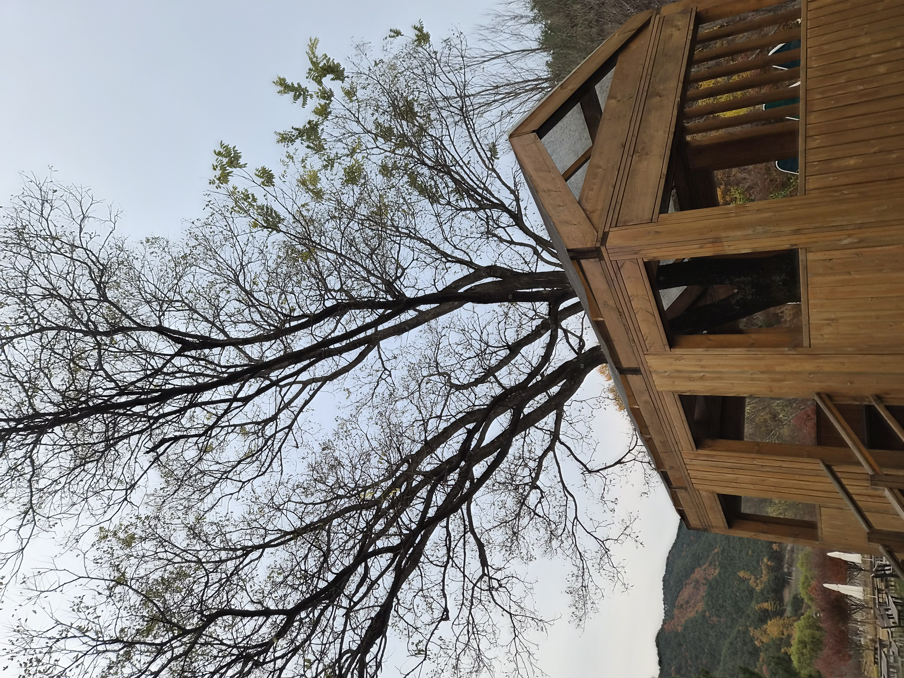
낙엽이 지고 마른 가지 사이로 겨울이 고개를 내미는 11월입니다. 올 한 해 동안 수많은 문을 두드리고, 때로는 주저앉고 싶었던 순간들을 기꺼이 이겨내며 여기까지 걸어온 여러분에게 진심 어린 박수를 보냅니다.
가끔은 뜻대로 되지 않아 멈춰 서고 싶었던 순간도 있었겠지만, 그 모든 고민과 발걸음이 모여 단단한 내일을 만드는 밑거름이 되었을 거예요.
다가오는 겨울의 문턱에서, 그동안 애썼을 스스로를 따뜻하게 안아주시길 바랍니다. 올해의 마지막 페이지까지, 서울고용센터가 언제나 여러분의 든든한 버팀목이 되어 함께하겠습니다.